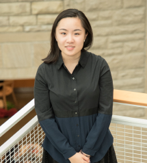

-
Betsy Fu
President
Instruments: Pipa, Flute
Bio: Betsy is a junior studying Computer Science in Engineering. Her passion for music blossomed from her love of the Pipa, which she has been playing since kindergarten in Hangzhou, China. After elementary school, she moved to Vancouver, Canada and was part of British Columbia Chinese Orchestra for 6 years. She played piano for 2 years and played flute for her high school's wind ensemble. During her free time, Betsy enjoys outdoor activities and drinking bubble tea.
Fun Fact: My name is spelled "Betsy" not "Besty (bestie)" and I will take Jilly's wilderness survival class my senior year. -
Eric Shen
Music Director
Instruments: Violin
Bio: Eric is a conductor majoring in physics and chemistry. In addition to music, he also enjoys gaming, anime, kdramas, and swimming. During winter, Eric likes the cool, refreshing air. During spring, he likes photographing the blooming flowers.
Fun Fact: I only wear shorts. -

Jilly Cai
Treasurer
Instruments: Piano, Clarinet, Basic Percussions
Bio: Jilly is a sophomore studying mechanical engineering (used to be a materials science major). She was dragged into CEME as a freshman by Betsy. She loves playing songs from movies and occasionally makes her own music. During her free time, she enjoys cooking, camping, travelling and sleeping.
Fun Fact: I teach people how to survive in the wilderness. Plz take my classes! -
Angel Ding
co-Social/Publicity Chair
Instruments: Violin, Clarinet
Bio: As a hotelie, Angel enjoys music, art, pastry, and people. Born in GuangZhou, China, raised in Zhuhai, Hong Kong and later moved to Vancouver Canada, Angel developed appreciation for diverse cultures a young age. Besides playing her violin and clarinet, Angel loves wandering around, spending afternoons pacing along the streets of foreign towns. She often brings her camera along to capture these special experiences.
Fun Fact: A single violin is made from over 70 individual pieces of wood. -
Yao Mi
co-Social/Publicity Chair
Instruments: Pipa, occasionally Percussion
Bio: Yao Mi is an undergraduate architecture student (class of 2019) from Beijing China.
Fun Fact: Goes by Mi Yao, pronounces a bit like 'meow'. Dream pet is a cat, but never had one. -
Kathleen Xu
Webmaster
Instruments: Violin
Bio: Kathleen wandered into CEME looking for a place to play her violin and never left. She is intrigued by all the Chinese instruments and wants to be able to play one someday. In her free time, she likes anime and creative writing.
Fun Fact: I spend most of my day listening to music. -
Lingxi "Lindsey" Zhou
Instruments: Zhongruan, Guzheng
Bio: Lingxi is an an MPS student in Food Science. She received her undergraduate degree in the University of Hong Kong (HKU). There, she was the general manager of the Chinese Orchestra in HKU. Now, she plays the Zhongruan for CEME, though she is better at Guzheng because she has played it for more than 15 years.
Fun Fact: I like food! Food can cure everything. When I am in a bad mood, food can immediately comfort me. -
Lu Liao
Instruments: Pipa, Zhongruan
Bio: Lu Liao is a forth year Ph.D. student from City and Regional Planning. She is originally from Hubei, China and is part of the Class of 2015.
Fun Fact: I have a 1-year-old chinchilla (totoro !) whose name is Mantou (馒头) ! -
Ryan Badman
Instruments: Guitar, Saxophone
Bio: Ryan is a Physics PhD student from the forests of Upstate New York. In addition to playing guitar and saxophone for CEME, he also traditionally plays tuba, trumpet, and accordion.
Fun Fact: Naked mole rats don't age (e.g. hearts, bones) and barely get cancer, with 35 year life spans. -
Yunxin "Christina" Wu
Instruments: Glockenspiel
Bio: The first full piece I played was Hedwig’s Theme. My Last name Wu means Wushu (Chinese martial art). My family all practice musical instruments, and I am the only one in my family who seriously practices Wushu.
Fun Fact: I did not change my last name after getting married because of Wushu, and because I am Chinese. As a result, when I fill in forms, still both my first and last names are considered typos by the form. -

Selena Feng
Instruments: Guzheng
Bio: Selena is a freshman accounting major from Lishui, Zhejiang Province in China.
Fun Fact: This is actually my fourth year in CEME! -
Bozhou Jin
Instruments: 笛子 (DiZi)
Bio: Bozhou is a Bio major from Zhuji, Zhejiang Province in China. He loves Taichi and other fun exercises. He is taking intro to freshwater angling next semester: if you want to join him please do so.
Fun Fact: The guy in the picture was indeed me myself. -
Xuechun "Bob" Qian
Instruments: Clarinet
Bio: Bob is a mechanical engineer from St. Louis, Missouri. In high school, Bob attended all-suburban band, bi-state band, and Missouri All-State Band, and was a section leader in his school's Pit Orchestra. This is his third year in CEME, and he loves it! He enjoys Computer Aided Design and video games, and can't decide whether he likes EDM or Latin music more.
Fun Fact: I gave myself the nickname Bob from either watching SpongeBob or Bob the Building, I can't remember which because I was only 4 years old. -
Jiayin Li
Instruments: Dizi
Bio: Jiayin is a junior majoring biometry & statistics (a Bio major before). She comes from Shandong Province in China. She also enjoys dancing, swimming and cooking. In her free time, she likes playing popular songs from TV series and films.
Fun Fact: If I'm free, I spend most of my day sleeping! -
Christine Sit
Instruments: Viola, Violin, Piano
Bio: Christine is an Environmental and Sustainability Sciences major (ESS) and am working towards a German minor. She is from the Atlanta area - a transfer student from GeorgiaTech (home of Buzz, the honeybee yellow jacket).
Fun Fact: "Geschwindigkeitsbegrenzung" is the word for "speed limit "in German, and "médecin" is how you say "doctor" in French ("médicament" is "medicine"). -
Jiaruo "Mavis" Li
Instruments: Guzheng
Bio: Jiaruo is a sophomore majoring in physics and math. She plays Guzheng since very eight. She loves classical Chinese music and ACG songs!
Fun Fact: As a physics major, she knows more material science students than physics ones lol. -

Alexander Zhu
Instruments: Viola
Bio: Alex Zhu is from Massachusetts and is part of the Class of 2022
Fun Fact: What's the only thing a violinist can do better than a violist? Jokes on you, I switched from violin. -

Andy Park
Instruments: Viola
Bio: Andy is a biological engineer at CALS. He enjoys running, listening to music and demolishing plates of food.
Fun Fact: I don’t like getting kicked. Please don’t kick me. -
Amy Wang
Instruments: Flute
Bio: Amy is a computer science major with a passion for the fine arts, from music-making to drawing to photomanipulations. In her free time, she indulges in C-dramas and practices the flute because you can never practice enough.
Fun Fact: Flutes have traditionally been made from a wide variety of materials, including bone, silver, gold, platinum, bamboo, wood, plastic, and glass, just to name a few. -
Chunlu Li
Instruments: Guzheng, Dizi, and Percussion
Bio: Chunlu is a freshman in College of Arts and Sciences from Beijing, China. After middle school, she moved to California and was part of California Youth Chinese Symphony for 3 years. Chunlu loves playing and listening to music. She is eager to learn almost every instrument. In her free time, she likes to eating snacks, playing volleyball, and watching volleyball games.
Fun Fact: I spent my first three years of life in a city in northeastern China which has colder winter than that of Ithaca. -
Devin Chin
Instruments: Percussion, Piano, Guitar, Ukulele
Bio: Devin is a linguistics and CS student from Long Island and is in the class of 2022. His first instrument was piano, but he loves learning new instruments. In his free time he enjoys composition, music production, wushu, cycling, and sleeping.
Fun Fact: My favorite anime is Steven Universe don't @ me -
Yihan "Emily" Zhang
Instruments: Percussions, Piano
Bio: Emily is a freshman in College of Arts and Sciences, who comes from Hangzhou, China. She enjoys all kinds of music and arts, and she also plays the piano in her spare time.
Fun Fact: I have an Akita dog. -
Seol-Yee "Jennifer" Lee
Instruments: Cello
Bio: Jennifer is a freshman in the College of Engineering hoping to study Mechanical Engineering. She was coerced into auditioning by a handful of her friends. She was also coerced into being part of CEME by a handful of her friends. She then coerced a handful of her friends into being part of CEME.
Fun Fact: I'm Korean. -
Shi Chong Zhao
Instruments: Pipa
Bio: Shi Chong is a freshman in the College of Arts and Science intending to major in Computer Science. Life has not been easy for his first few months in Cornell and it is about to get even harder (help). His hobbies include reading, watching kdramas and animes.
Fun Fact: I speak Chinese and Japanese and and am considering adding Korean to the mix just to complete the collection. -
Xinyi "Cindy" Xian
Instruments: Piano, Guitar, Recorder
Bio:
Fun Fact: -

Qingyi Gong
Instruments: Erhu
Bio: I am a master's student majoring in Asian Studies, with a particular interest in classical Chinese literature. Raised in Nanyang, Henan Province in China, I came to the US five years ago to attend Bryn Mawr College. In my free time, I like creative writing, traveling and practicing Chinese calligraphy.
Fun Fact: The first Chinese musical instrument I learned was actually Pipa. -
Yingyu Liu
Instruments: Erhu
Bio: Yingyu is a PhD candidate in plant pathology. She picked up playing Erhu when she entered graduate school after had stopped playing for seven years. She is a Chinese music fanatic and a huge fan of the China National Traditional Orchestra. Her heart holds special spaces for Pipa, Zhongruan, and Guzheng, which she is striving to learn how to play. And, YES, my first name is the same pronunciation as "English" in mandarin, but stands for "the hero of the universe".
Fun Fact: When I was an undergrad, I studied at 3 different universities in different countries and earned 2 bachelor's degrees in 4 years.

Cornell Eastern Music Ensemble